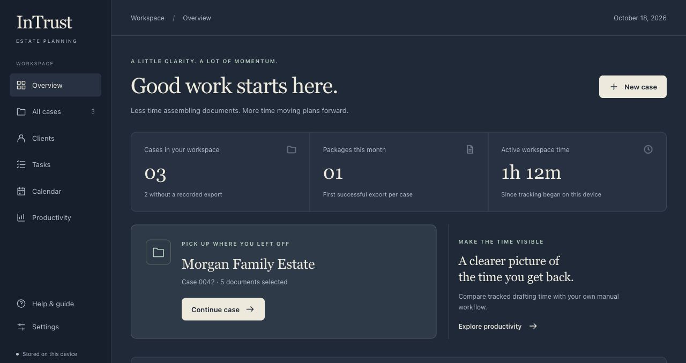

A next step for every case.
Keep dated and undated tasks with their cases. Track what’s open, what’s due, and what’s done.
Estate planning, thoughtfully connected
From the first client detail to the next follow-up.
A calmer, more connected way to prepare estate packages.
A desktop workspace for estate planning practices · Early access

Actual workspace · Fictional sample data
Built for the work.
And the people behind it.
01 / From details to documents
Less copying, assembling, and keeping track.
InTrust brings structure to the preparation, so your attention can stay on the plan.
Open a case and work through structured fields for the client, fiduciaries, beneficiaries, and planning choices.
Illustrative workflow · You guide each step02 / The whole picture
Meet the workspace for everything around it.
See your cases, upcoming tasks, and recorded activity, then move straight into the next piece of work.
Actual workspace
Fictional sample data
Keep dated and undated tasks with their cases. Track what’s open, what’s due, and what’s done.
Start from a client email template, personalize it, and open a draft in your email app. You review and send.
Compare tracked workspace time with your own manual-drafting estimates. See the difference in your workflow.
03 / Room for what matters
A client conversation. A careful review.
A little breathing room in your day.
Explore the difference with your own estimates.
In the app, Productivity uses your recorded activity and the manual baselines you set.
of potential time back each month
Example inputs, not measured results or a performance promise. Actual time depends on your package and review process. Use the same scope of work for both estimates.
04 / Thoughtfully fitted
Start with the documents and drafting preferences your firm already knows. We’ll discuss the package, configuration, and support that fit your practice.
Let’s talk about your workflowPricing reflects your document set, template complexity, configuration, and implementation needs.
Cases and workspace records stay on the device. Light and dark modes make the workspace feel like yours.
An in-app guide is always within reach, from your first case to the next client follow-up.
A few useful details
No. InTrust supports structured preparation and document assembly. Basic entry checks do not replace an attorney’s review of the documents and the client’s plan.
Create an event in InTrust, then open a Google Calendar or Outlook draft, or export an Apple Calendar-compatible calendar file. You save or import it in the external calendar. These are separate copies; changes do not sync automatically.
InTrust helps prepare an email draft that you review and send through your email app. Case fees record expected charges for internal planning; they are not invoicing, payment collection, or profit reporting.
The current workspace stores data locally on each device. It does not provide shared cloud case storage or automatic device synchronization. We can discuss your team’s setup during a walkthrough.
Request a walkthrough below. We’ll discuss your current estate package, drafting process, desktop requirements, and implementation scope before planning next steps.
Let’s move your practice forward
Tell us a little about your practice.
We’ll walk through InTrust together and see where it can make your work easier.